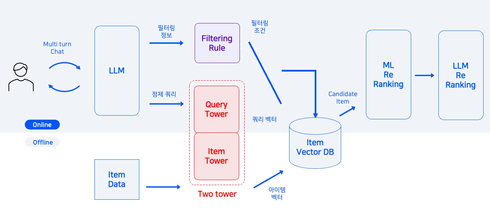

MACHINE LEARNING PORTFOLIO
김민재
데이터를 바탕으로 문제를 정의하고
머신러닝과 서비스 구현으로 해결하는 포트폴리오
네이버 커넥트재단 부스트캠프 AI Tech 8기 프로젝트와 개인 프로젝트를 바탕으로,
추천 시스템, 랭킹, 데이터 분석, 서비스 구현 경험을 중심으로 정리했습니다.
강점 요약
- 사용자 행동 데이터를 바탕으로 문제를 구조화하는 경험
- 지표 정의, 전처리, 피처 엔지니어링, 검증 전략 수립 경험
- 분석 결과를 서비스와 제품 개선 흐름으로 연결하는 경험
링크
- GitHub: github.com/minzai0116
- 서비스: fcoach.fun
- [TODO] 이메일 / 연락처는 제출본에 입력
문제 정의
사용자 행동 데이터와 로그를 분석 질문으로 바꾸고, 구조화된 문제로 재정의합니다.
모델링 / 검증
피처 엔지니어링, 추천 모델링, 리랭킹, 교차 검증으로 성능과 일반화를 함께 확인합니다.
구현 / 연결
분석 결과를 FastAPI, Next.js 기반 서비스 흐름에 연결해 실제 사용 경험까지 확장합니다.
역량 요약
자료 가이드에서 강조한 것처럼, 프로젝트를 단순 나열하지 않고 추천 시스템, 데이터 분석, 서비스 구현 역량 중심으로 구성했습니다.
핵심 역량
- 사용자 행동 데이터를 기반으로 문제를 정의하고 분석 지표를 설계하는 역량
- 전처리, 피처 엔지니어링, 모델링, 리랭킹, 검증 전략 비교까지 이어지는 데이터 분석 역량
- 분석 결과를 FastAPI, Next.js, SQLite 기반 서비스 경험으로 연결하는 구현 역량
사용 기술
Python
SQL
Pandas
NumPy
Scikit-learn
PyTorch
CatBoost
LightGBM
FastAPI
Next.js
SQLite
GitHub Actions
프로젝트 선정 기준
- Movie Recommendation: 추천 시스템 고도화, 피처 엔지니어링, 리랭킹 구조 설계 경험을 보여주는 프로젝트
- RMSE: 대규모 데이터, 검색, 리랭킹, 서비스 구조 설계 경험을 보여주는 프로젝트
- fcoach: 행동 데이터를 분석하고 문제 진단과 액션 제안으로 연결한 데이터 기반 서비스 프로젝트
- Kobe Bryant Shot Selection: 검증 전략과 일반화 성능 개선 경험을 수치로 설명할 수 있는 프로젝트
교육 / 배경
- 네이버 커넥트재단 부스트캠프 AI Tech 8기 수료
- [TODO] 학교명 / 전공 / 졸업(예정) 시기 입력
- 추천 시스템, 머신러닝, 데이터 기반 서비스 설계 프로젝트 수행
기간
[TODO] 실제 진행 기간 입력
사용 기술
Python, PyTorch, RecBole, CatBoost, Pandas
목표
MovieLens 기반 Top-K 추천 성능 향상과 2-Stage 추천 파이프라인 구축
역할
메타데이터 EDA, Feature Engineering, 2-Stage Re-ranking 시스템 설계
기여도
[TODO] 실제 기준으로 입력 권장
문제 정의 / 구조
단순한 정적 선호 예측을 넘어, 시청 순서와 누락 아이템까지 고려해야 하는 추천 문제를 다뤘습니다. 후보군 생성과 리랭킹을 분리해 정적 취향과 순차적 패턴을 동시에 반영하는 구조를 설계했습니다.
EASE
Multi-VAE
CatBoost Ranker
season/dayparting
genre ratio
내가 한 일
- 메타데이터 정제 및 EDA 수행
- 계절, 시간대, 장르 비율, 영화 인기도/랭킹 기반 피처 설계
- 감독/작가 1:N 관계 정제와 TF-IDF 기반 장르 표현 개선
- 후보 생성과 리랭킹이 분리된 파이프라인 설계
성과
- Valid Recall@10 0.2012, Public LB 0.1670
- 유저당 200개 후보군 생성 후 약 40개 피처로 최종 Top-10 선정
- 후보군 생성과 리랭킹을 분리한 추천 구조 설계 경험 확보
개선점
- retrieval 품질 향상을 위한 후보 생성 단계 고도화
- 유저 시퀀스를 더 정교하게 반영하는 sequential model 확장
- 리랭킹 피처 중요도 분석을 통한 해석 가능성 강화
기간
[TODO] 실제 진행 기간 입력
사용 기술
Python, FastAPI, PyTorch, CatBoost, PostgreSQL, Redis, Docker, GitHub Actions, k3s
목표
자연어 의도를 반영해 검색·추천·설명 생성을 연결하는 대화형 추천 시스템 구현
역할
EDA, 추천 시스템 아키텍처 설계, 프롬프트 엔지니어링
기여도
[TODO] 실제 기준으로 입력 권장
프로젝트 개요
- Amazon Reviews'23 Electronics 도메인 데이터 기반
- 리뷰 데이터 9,263,526건, 메타데이터 193,396개 활용
- Dual-LLM, Filtering, Two-Tower Retrieval, ML Reranker, Explainable Recommendation 구조 적용
내가 한 일
- 전자제품 도메인 EDA 수행 및 추천 시스템 아키텍처 설계
- 사용자 자연어 요청을 검색 가능한 형태로 정제하는 프롬프트 흐름 설계
- 검색 공간 축소, 후보 생성, 리랭킹, 설명 생성이 이어지는 파이프라인 정의

프로젝트 README에 정리한 RecSys 아키텍처 이미지를 활용했습니다.
성과 및 개선점
- 의도 해석, 검색, 리랭킹, 설명 생성을 분리한 하이브리드 추천 구조 구현
- 대규모 리뷰 데이터 환경에서 확장 가능한 검색/추천 파이프라인 설계 경험 확보
- LLM 기반 의도 해석의 품질을 평가할 수 있는 정량 지표 체계는 추가 보강이 필요
기간
[TODO] 실제 진행 기간 입력
사용 기술
Python, FastAPI, Next.js, SQLite, Nexon Open API, FC Online DataCenter
목표
행동 데이터를 바탕으로 문제를 진단하고, 액션과 검증 지표까지 제안하는 데이터 기반 서비스 구현
역할
기획, 데이터 수집 API 연동, KPI 설계, 분석 API/웹 서비스 구현
기여도
[TODO] 실제 기준으로 입력 권장
문제 정의
단순 조회형 서비스는 결과를 보여주는 데는 강하지만, 다음 액션까지 연결되지 않는 경우가 많습니다. 이 프로젝트는 행동 데이터를 바탕으로 진단 → 개입 → 검증 흐름을 하나의 제품 경험으로 묶는 것을 목표로 했습니다.
핵심 흐름
- 외부 API 기반 데이터 수집 및 정규화
- 구간별 KPI 계산과 문제 유형 진단
- 액션 카드 제안 및 전후 지표 비교 구조 설계
- 분석 결과를 웹 서비스 흐름으로 연결
내가 한 일
- Nexon Open API와 FC Online DataCenter를 조합한 데이터 수집 경로 설계
- 모드, 경기 수 구간별로 나눠 비교 가능한 KPI 체계 구성
- FastAPI 기반 분석 API와 Next.js 기반 웹 서비스 구현
- SQLite를 활용한 스냅샷, 실험 로그, 이벤트 기록 구조 설계
성과 및 개선점
- 행동 데이터를 분석 결과에서 끝내지 않고 서비스 흐름과 액션 제안 구조로 연결
- 단순 조회형이 아닌 액션 제안형 서비스 구조 구현
- 현재 데모 배포 구조는 영속성 한계가 있어 장기 운영 시 관리형 DB 전환이 필요
기간
[TODO] 실제 진행 기간 입력
사용 기술
Python, Scikit-learn, XGBoost, LightGBM
목표
코비 브라이언트 슛 성공 여부 예측과 검증 전략에 따른 일반화 성능 차이 비교
역할
전처리, 피처 엔지니어링, 검증 전략 비교, 성능 분석
기여도
[TODO] 실제 기준으로 입력 권장
핵심 접근
loc_x, loc_y 기반 dist, angle 피처 생성- 경기 상황 피처와 홈/원정 여부, 시간 파생 피처 구성
- RandomForest, XGBoost, LightGBM 비교
- StratifiedKFold, GroupKFold, OOF 기반 검증
성과
- 발표 자료 기준 69 / 1117 → 44 / 1117까지 개선
- 단순 모델 변경보다 검증 전략과 데이터 분할 방식이 성능에 크게 영향을 준다는 점 확인
- 일반화 성능을 고려한 평가 설계의 중요성을 배움
이 포트폴리오에서 전달하고 싶은 점
- Movie Recommendation과 RMSE를 통해 추천, 검색, 리랭킹, 대규모 데이터 설계 경험을 확보했습니다.
- fcoach를 통해 분석 결과를 서비스와 액션 제안 흐름으로 연결하는 경험을 쌓았습니다.
- Kobe를 통해 검증 전략과 성능 개선 과정을 수치로 설명하는 분석 경험을 보여줄 수 있습니다.
- 특정 도메인에 한정되지 않고, 데이터를 기반으로 문제를 재정의하고 해결하는 역량을 중심으로 구성했습니다.
제출 전 체크
- 연락처, 학력, 프로젝트 기간, 기여도 등 placeholder 교체
- 지원 회사에 맞는 프로젝트 순서와 상단 소개 문구만 추가 조정
- 면접 대비용으로 각 프로젝트의 개선점 질문에 대한 답변 정리